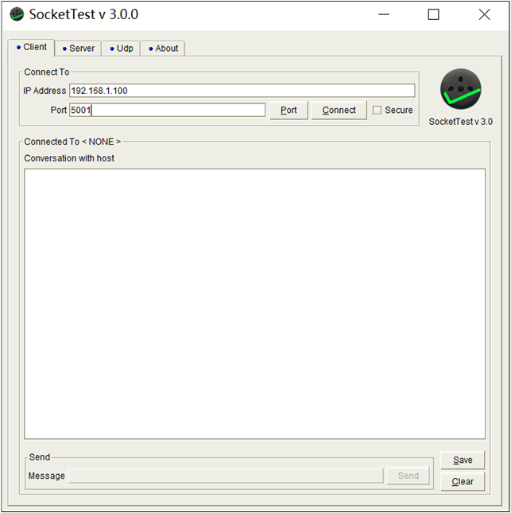
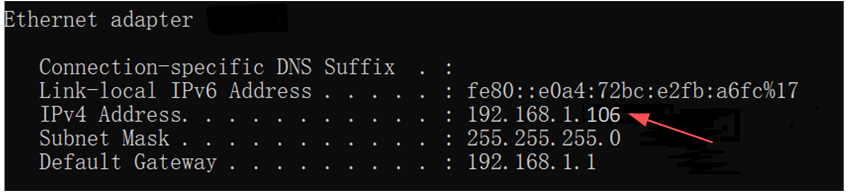
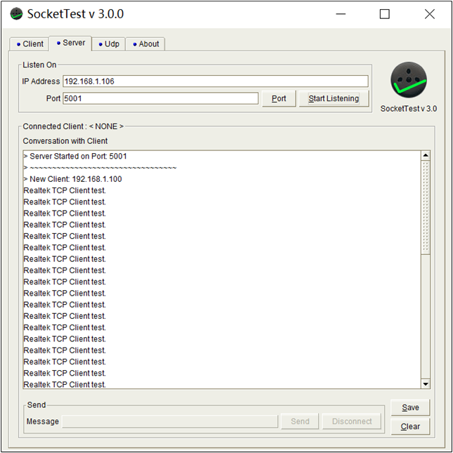
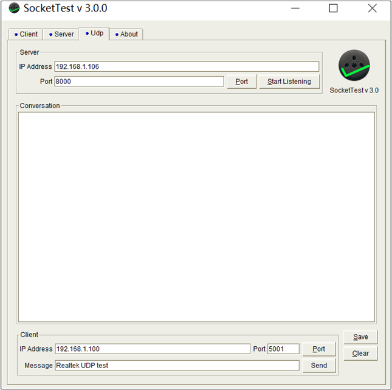
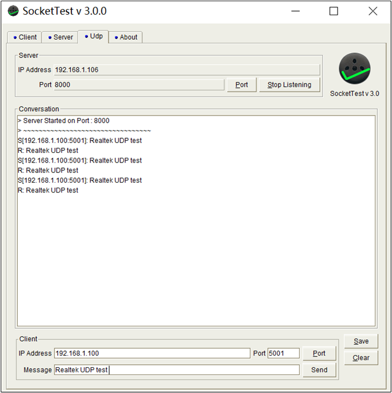
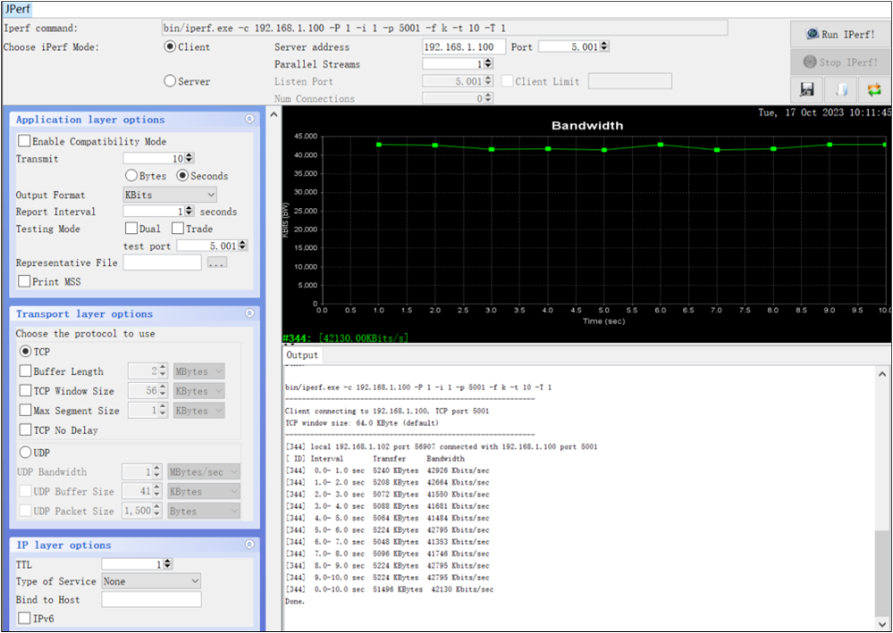
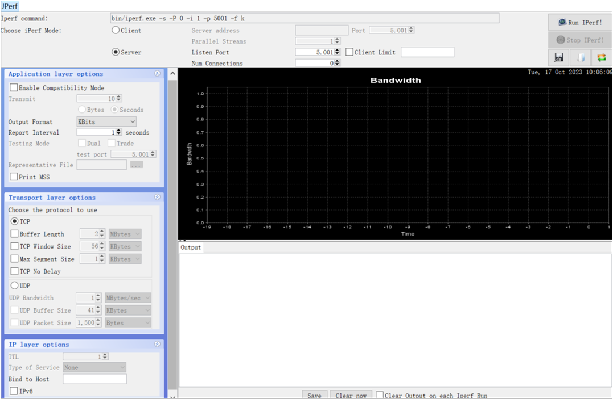
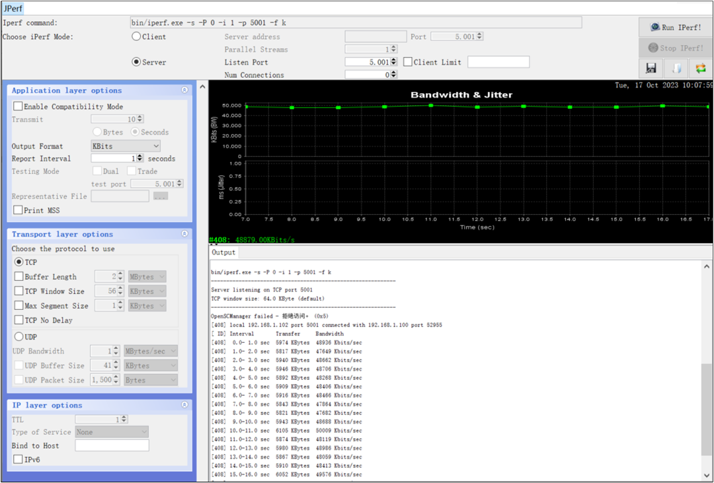

以太网
RTL87x2G 内部集成了一个以太网外设，其实际是通过 GDMA 控制器进行介质访问控制实现 MAC 层任务。Ethernet 支持简化介质独立接口 (RMII) 用于与外部 PHY 芯片连接，同时还集成了站管理接口 (SMI) 用于与外部 PHY 通信。
LWIP 是一款轻量级的开源 TCP/IP 协议栈，因为开源及资源占用少等优点被广泛应用在中低端控制器平台中。RTL87x2G 平台已移植目前最新的 2.1.3 版本 LWIP。
环境需求
RTL87x2G Model B EVB
RTL8772GWP/RTL8772GWP-VI/RTL8772GWP-VM/RTL8772GWP-VA 子板
RTL8201FR：Realtek 设计的支持 RMII 接口的 10/100Mbps 以太网物理层收发器
ARM Keil MDK: https://developer.arm.com
MP Tool: RealMCU
Debug Analyzer: RealMCU
SocketTest: https://sourceforge.net/projects/sockettest/
更多信息请参考 快速入门。
备注
关于 RTL8201FR 的详细资料，请联系 Realtek Ethernet PHY IC 对应窗口获取。
硬件连线
EVB 上 Ethernet 模块硬件可参考 Model B 评估板 中 B_以太网模块 。
Ethernet 接口引脚如下表，其中前 8 个为 RMII 接口引脚，后 2 个为 SMI 接口引脚。ETH 接口对应引脚固定不可以改变。
引脚名称 |
PIN |
含义 |
|---|---|---|
ETH_TX_EN |
P10_1 |
数据发送使能，在数据发送过程中保持有效电平 |
ETH_TXD0 |
P10_0 |
数据发送信号线 0 |
ETH_TXD1 |
P9_7 |
数据发送信号线 1 |
ETH_CRS_DV |
P9_5 |
接收数据有效信号 |
ETH_RXD0 |
P9_4 |
数据接收信号线 0 |
ETH_RXD1 |
P9_3 |
数据接收信号线 1 |
ETH_REF_CLK |
P9_6 |
时钟信号，内部时钟源提供 50MHz 参考时钟 |
ETH_RX_ERR |
P10_2 |
接收错误信号线 |
ETH_MDC |
P1_7 |
SMI 接口时钟线 |
ETH_MDIO |
P3_7 |
SMI 接口数据线 |
操作步骤：
确认 RTL87x2G 板已外接 RTL8201FR PHY。
RTL87x2G 板网口使用网线接到路由器。
PC 端网口使用网线接到同一路由器。
断开 PC 的所有无线网络。
配置选项
/*******************************************************
* Test Mode Config
*******************************************************/
#define NETCONN_TCP_SERVER_TEST 1
#define NETCONN_TCP_CLIENT_TEST 2
#define NETCONN_UDP_TEST 3
#define NETCONN_JPERF_CLENT_TEST 4
#define NETCONN_JPERF_SERVER_TEST 5
#define TEST_MODE NETCONN_TCP_SERVER_TEST
宏定义 |
功能描述 |
|---|---|
NETCONN_TCP_SERVER_TEST |
TCP 服务器 测试 |
NETCONN_TCP_CLIENT_TEST |
TCP 客户端 测试 |
NETCONN_UDP_TEST |
UDP 测试 |
NETCONN_JPERF_CLENT_TEST |
Jperf TX 速度测试 |
NETCONN_JPERF_SERVER_TEST |
Jperf RX 速度测试 |
TEST_MODE |
选择测试模式 |
编译和下载
用户可以在 SDK 文件夹中找到此示例：
Project file: samples\ethernet\ethernet\proj\mdk
Project file: samples\ethernet\ethernet\proj\gcc
请按照以下步骤操作构建并运行该示例:
打开工程文件。
按照 快速入门 中 编译 APP Image 给出的步骤构建目标文件。
编译成功后，
sdk\samples\ethernet\ethernet\proj\mdk\bin路径下会生成app_MP_xxx.bin文件。按下 Reset 按键，开始运行。
源代码目录
工程文件目录：
sdk\samples\ethernet\ethernet\proj源代码目录：
sdk\samples\ethernet\ethernet\src
Ethernet application 中的源文件目前分为以下几类：
└── Project: ethernet
└── secure_only_app
└── Device includes startup code
├── startup_rtl.c
└── system_rtl.c
├── CMSIS includes CMSIS header files
├── CMSE Library Non-secure callable lib
├── Lib includes all binary symbol files that user application is built on
├── Peripheral includes all peripheral drivers and module code used by the application
└── ethernet including Ethernet driver
└── ethernet_driver.c
├── lwip/api includes LWIP TCP/IP source code
├── lwip/core includes LWIP TCP/IP source code
├── lwip/netif includes LWIP TCP/IP source code
└── arch includes interface files for RTL87x2G and Ethernet
├── ethernetif.c the file of Network card driver
└── sys_arch.c the file of LWIP OS Interface
└── app includes the Ethernet user application implementation
├── main.c
├── common.c
└── test.c
典型应用
TCP 服务器
RTL87x2G 作为 TCP 服务器，PC 的 SocketTest 作为 TCP 客户端，双方建立 TCP 连接，RTL87x2G 接收到客户端发来的 TCP 数据后再发送回客户端。
测试验证
运行程序，查看如下日志，获取本地 IP 地址：
[TCPIP_Init] local IP addr:192.168.1.100
在 SocketTest 中，打开 Client 选项卡；
将本地 IP 地址填入 IP Address ，将
board.h中LOCAL_PORT填入 Port 栏位。
TCP 服务器实验界面配置图
复位开发板后点击 Connect 。
输入待发送数据，然后点击 Send ，每次发送结束接收数据栏位都会显示已发送数据：

TCP 服务器实验结果图
{kind=link}
代码介绍
Ethernet 初始化，通过调用
eth_init_driver实现。引脚定义如下：
/******************************************************* * ETHERNET Pin Config *******************************************************/ #define ETH_TX_EN P10_1 #define ETH_TXD0 P10_0 #define ETH_TXD1 P9_7 #define ETH_CRS_DV P9_5 #define ETH_RXD0 P9_4 #define ETH_RXD1 P9_3 #define ETH_REF_CLK P9_6 #define ETH_RX_ERR P10_2 #define ETH_MDC P1_7 #define ETH_MDIO P3_7
调用
eth_init_pad_pinmux配置引脚 PAD 和 PINMUX 功能。调用
eth_init_data进行 Ethernet 数据初始化，主要用于初始化 TX/RX descriptor 及 buffer 大小及存放位置。可以通过修改
MAC_ADDR1-MAC_ADDR6宏来修改本地 MAC 地址，ETH_SetMacAddr()用于修改 MAC 地址。ETH_ClkInit()用于初始化 Ethernet 时钟。eth_config_nvic用于使能 NVIC 中断。调用
ETH_StructInit()填入ETH_InitTypeDef的缺省值。在
eth_init_driver()中，根据需求修改ETH_InitTypeDef的成员变量：通过调用
ETH_SetDescNum()设定 TX/RX descriptor 个数。通过调用
ETH_SetDescAddr()设定 TX/RX descriptor ring 的起始地址。通过调用
ETH_SetPktBuf()设定 TX/RX descriptor 数据缓存的起始地址。通过调用
ETH_SetBufSize()设置 TX/RX descriptor 数据缓存大小。如果有其他配置需要修改，可以添加修改
ETH_InitTypeDef中成员变量。调用
ETH_Init()进行以太网络初始化。
main中创建 app task，app_main_task中会调用TCPIP_Init初始化 TCP/IP，同时会调用test_init创建 test task。test_thread中主要进行如下操作：调用
netconn_new(NETCONN_TCP)申请一个 TCP 连接结构。调用
netconn_bind(conn, IP_ADDR_ANY, LOCAL_PORT)绑定本地的 IP 地址和端口号。调用
netconn_listen(conn)使 TCP 服务器进入监听状态。调用
netconn_accept(conn, &newconn)处理客户端的连接请求。调用
netconn_recv(newconn, &buf)接收客户端发来的数据。调用
netbuf_data(buf, &data, &len)将接收到的数据保存到 data 中。调用
netconn_write(newconn, data, len, NETCONN_COPY)将接收到的数据发送回客户端。调用
netbuf_next(buf)指向下一个 pbuf。调用
netconn_close(newconn)关闭与客户端的连接。调用
netconn_delete(newconn)释放 newconn 空间。
TCP 客户端
PC 端 SocketTest 作为 TCP 服务器，RTL87x2G 作为 TCP 客户端，双方建立 TCP 连接，RTL87x2G 发送数据到 SocketTest。
测试验证
通过
ipconfig指令获取 PC 端 IPv4 地址：

获取 PC MAC ADDR
{kind=link}
将 PC 端 IPv4 地址填入
board.h中DEST_IP_ADDR处。
//dest ip addr #define DEST_IP_ADDR0 192 #define DEST_IP_ADDR1 168 #define DEST_IP_ADDR2 1 #define DEST_IP_ADDR3 106
在 SocketTest 中，打开 Server 选项卡；
将 PC 端 IPv4 地址填入 IP Address 栏位；
将
board.h中DEST_PORT填入 Port 栏位。

TCP 客户端实验界面配置图
点击 Start Listening 按钮后复位开发板。
接收数据栏位会显示已发送数据：

TCP 客户端实验结果图
{kind=link}
代码介绍
参考 Ethernet 初始化 。
main中创建 app task，app_main_task中会调用TCPIP_Init初始化 TCP/IP，同时会调用test_init创建 test task。test_thread中主要进行如下操作：调用
netconn_new(NETCONN_TCP)申请一个 TCP 连接结构。调用
netconn_connect(conn, &ipaddr, DEST_PORT)连接服务器。调用
netconn_write(newconn, data, len, NETCONN_COPY)向服务器发送数据。
UDP
RTL87x2G 与 PC 端 SocketTest 进行 UDP 通信，RTL87x2G 接收到 UDP 数据后再发送回 SocketTest。
测试验证
通过
ipconfig指令获取 PC 端 IPv4 地址：
获取 PC MAC ADDR
运行程序，查看如下日志，获取本地 IP 地址：
[TCPIP_Init] local IP addr: 192.168.1.100
在 PC 端 UDP 上位机中，打开 Udp 选项卡；
在 Server 界面下，将 PC 端 IPv4 地址填入 IP Address 栏位；
在 Client 界面下，将本地 IP 地址填入 IP Address 栏位，将
board.h中LOCAL_PORT填入 Port 栏位。

UDP 实验界面配置图
{kind=link}
复位开发板后点击 Start Listening 按钮。
输入待发送数据，然后点击 发送数据 按钮，每次发送结束后接收数据栏位都会显示已发送数据：

UDP 实验结果图
{kind=link}
代码介绍
参考 Ethernet 初始化 。
main中创建 app task，app_main_task中会调用TCPIP_Init初始化 TCP/IP，同时会调用test_init创建 test task。test_thread中主要进行如下操作：调用
netconn_new(NETCONN_UDP)申请一个 UDP 连接结构。调用
netconn_bind(conn, IP_ADDR_ANY, LOCAL_PORT)绑定本地的 IP 地址和端口号。调用
netconn_recv(newconn, &buf)接收客户端发来的数据。调用
netbuf_copy(buf, buffer, sizeof(buffer))将接收到的数据保存到 buffer 中。调用
netconn_send(conn, buf)将接收到的数据发送回客户端。
Jperf RX
RTL87x2G 作为 TCP 服务器，PC 端 Jperf 上位机作为 TCP 客户端，双方建立 TCP 连接。PC 端 Jperf 上位机发送数据，RTL87x2G 端 TCP 服务器接收数据。
测试验证
运行程序，查看如下日志，获取本地 IP 地址：
[TCPIP_Init] local IP addr:192.168.1.100
在 PC 端 Jperf 上位机中，将本地 IP 地址填入 Server address 栏位；
将
board.h中LOCAL_PORT填入 Client Port 栏位。

Jperf RX 测速实验界面配置图
复位开发板后点击 Run Iperf 按钮。
PC 端 Jperf 上位机会显示实时速度：
备注
测速时会关闭工程日志输出。

Jperf RX 测速实验结果图
{kind=link}
代码介绍
参考 Ethernet 初始化 。
main中创建 app task，app_main_task中会调用TCPIP_Init初始化 TCP/IP，同时会调用test_init创建 test task。test_thread中主要进行如下操作：调用
netconn_new(NETCONN_TCP)申请一个 TCP 连接结构。调用
netconn_bind(conn, IP_ADDR_ANY, LOCAL_PORT)绑定本地的 IP 地址和端口号。调用
netconn_listen(conn)使 TCP 服务器进入监听状态。调用
netconn_accept(conn, &newconn)处理客户端的连接请求。调用
netconn_recv(newconn, &buf)接收客户端发来的数据。调用
netbuf_data(buf, &data, &len)将接收到的数据保存到 data 中。调用
netbuf_next(buf)指向下一个 pbuf。调用
netconn_close(newconn)关闭与客户端的连接。调用
netconn_delete(newconn)释放 newconn 空间。
Jperf TX
RTL87x2G 作为 TCP 客户端，PC 端 Jperf 上位机作为 TCP 服务器，双方建立 TCP 连接，RTL87x2G 发送数据到 PC 端 Jperf 上位机。
测试验证
通过
ipconfig指令获取 PC 端 IPv4 地址：
获取 PC MAC ADDR
将 PC 端 IPv4 地址填入
board.h中DEST_IP_ADDR处。//dest ip addr #define DEST_IP_ADDR0 192 #define DEST_IP_ADDR1 168 #define DEST_IP_ADDR2 1 #define DEST_IP_ADDR3 106
在 PC 端 Jperf 上位机中，将
board.h中DEST_PORT填入 Listen Port 栏位。

Jperf TX 测速实验界面配置图
{kind=link}
点击 Run Iperf 按钮后复位开发板。
PC 端 Jperf 上位机会显示实时速度：
备注
测速时会关闭工程日志输出。

Jperf TX 测速实验结果图
{kind=link}
代码介绍
参考 Ethernet 初始化 。
main中创建 app task，app_main_task中会调用TCPIP_Init初始化 TCP/IP，同时会调用test_init创建 test task。test_thread中主要进行如下操作：调用
netconn_new(NETCONN_TCP)申请一个 TCP 连接结构。调用
netconn_connect(conn, &ipaddr, DEST_PORT)连接服务器。调用
netconn_write(conn, send_buf, IPERF_BUFSZ, NETCONN_COPY)向服务器发送数据。
See Also
相关 API Reference 请查看：